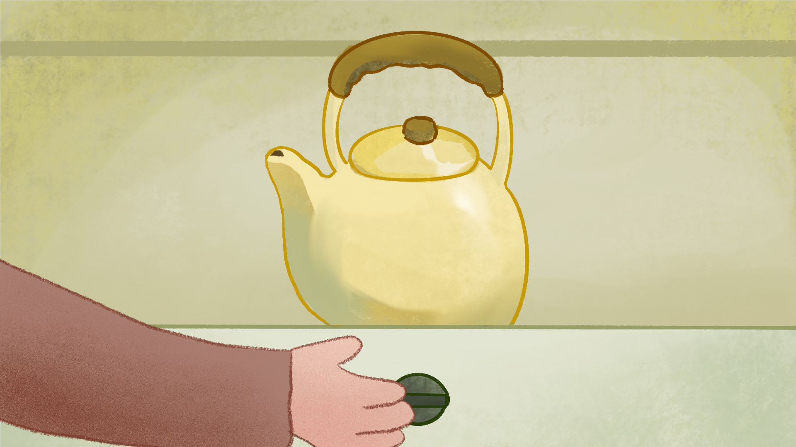
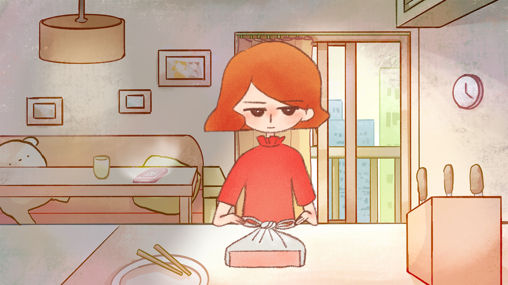
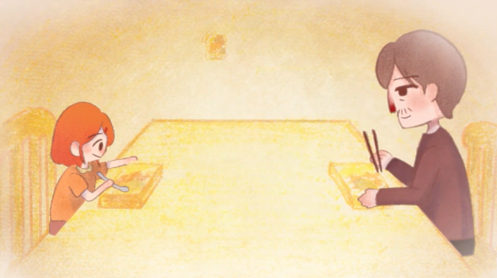

一位獨居老人，在廚房裡反覆練習一道 早已失去對象的便當。

一位獨居老人，在廚房裡反覆練習一道 早已失去對象的便當。
在一間老舊的公寓裡，獨居老人阿成關起沸騰的水壺，為又一個孤單的日子輕輕嘆息。 中午時分，他翻開舊食譜本，決定重新製作那份 曾與女兒在特殊日子裡一起完成的親子便當。

另一處城市中，女兒在租屋處的廚房打包菜餚， 為父親的生日做準備。 每一個烹飪動作，都喚起記憶的片段： 年幼時因失誤而落淚的時刻、 成長中共享失敗料理的笑聲、 高中後漸行漸遠的背影， 以及成年後僅剩寒暄的日常。

傍晚，雨落下來。 老人完成了便當，靜靜望著它發呆； 女兒坐在回家的公車上，窗外同樣下著雨。 當老人準備動筷時，女兒終於回到家中。 兩人交換便當，靜靜用餐， 彷彿回到那段父女共享飯桌的溫柔時光。

《食刻》是一部圍繞失落與修復展開的家庭療癒動畫短片， 以高齡獨居老人與長期離家工作的女兒為主角。 本作關注高齡化社會中獨居長者的孤獨， 以及親子關係在時間與距離中逐漸疏離的現象。 作品選擇以「料理與親子便當」作為情感載體， 透過日常烹飪的動作與沉默的片刻， 串連父女之間隨時間變化的情感。 那些看似平凡的準備、等待與用餐時刻， 其實承載著無可取代的陪伴與理解。